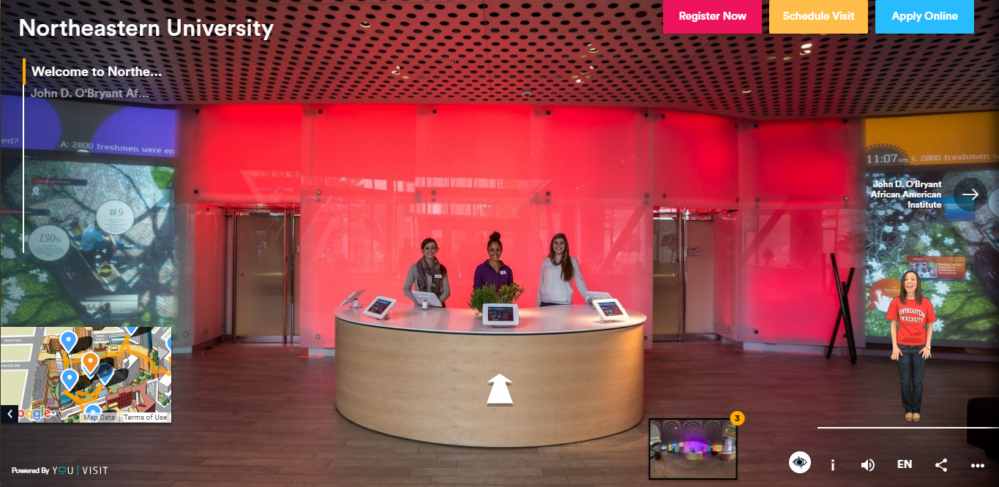
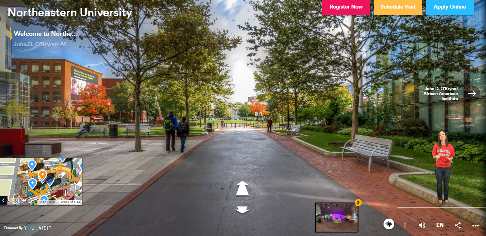
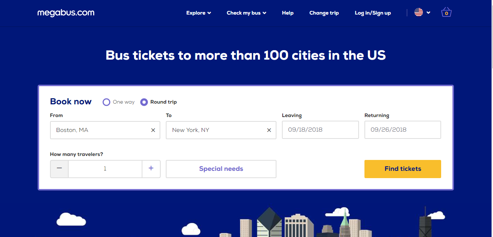
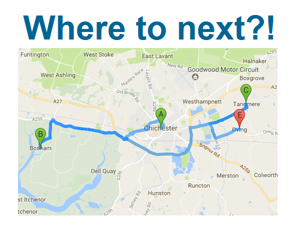

Figure 3: Egg Drop Simulation
Figure 3: Egg Drop SimulationProject 1:
This project takes inspiration from the virtual tours available for colleges. (https://www.youvisit.com/northeastern, https://college.harvard.edu/admissions/visit/virtual-tour). There are these Google street view available for roaming around the world. But, they don’t give enough information about the sightseeing’s and the architecture around us, let alone for important architectural monuments.
Figure 1: Northeastern Virtual Tour
Figure 2: Centennial Hall View
So, I propose to create a virtual tour guild intended specifically for the worship places around the globe which are famous(Barcelona Cathedral: https://en.wikipedia.org/wiki/Barcelona_Cathedral) and may be not accessible(https://en.wikipedia.org/wiki/Pashupatinath_Temple) throughout the year. For ease of tourists and worshippers, this can be a great tool to leverage. This will not only be helpful for the first timers who want to view such places but can also give a natural and more organic experience of these destination. I am planning to add more information of the surrounding building and places regarding such places. Just like the images above has a virtual image for the places in and around the Northeastern Campus, I am planning something similar for the shrines and churches around the globe with a much more engrossing experience through the use of facts and information popups.
Technological Angle:
Using Google Street View APIs (https://developers.google.com/maps/documentation/streetview/intro), Three.js (https://threejs.org/), Node.js, JavaScript/ JQuery are good places to start exploring.
Project 2:
This project is about using the common science experiments like the egg drop project (https://buggyandbuddy.com/stem-kids-egg-drop-project/) and transform to the virtual world. Create panoramic images and simulation of these experiments to enhance the learning experience. Current application on web look like this (https://www.physicsclassroom.com/Physics-Interactives/Momentum-and-Collisions/Egg-Drop/Egg-Drop-Interactive) which tend to convey the core logic but is very bland and boring. Enhancing such experiences and helping kids learn better is the aim of this project.
Figure 3: Egg Drop Simulation
Technical Angle:
Using Three.js(https://threejs.org/), Knowledge of basic sciences, List of projects can be taken from (https://www.education.com/science-fair/fifth-grade/). Web application with express.js(https://expressjs.com/) for server side coding will be helpful to store all the related data regarding the experiments.
Project 3:
Ever wondered why we filled up all those text boxes and drop downs and calendars to plan a trip? It’s very irritating and cumbersome to use them like figure 4. So, I am proposing a new Visual way to plan a road trip. With very few(or no) textboxes and other form elements. Through use of maps directly putting the source and destination on to it. Getting major restroom stops and customizable city detours along the way. Something like figure 5 will give a general knowhow of the project. A customizable itinerary for the same will be generated which will have all the important details like restroom stops, gas stations, scenic views along the route etc.
Figure 4: Form filling for road trip
Figure 5: Visual way to select source and destination
Technical Angle: Google Location APIs(https://developers.google.com/location-context/), Node.js, Materialize front end(https://materializecss.com/) for a basic web application.